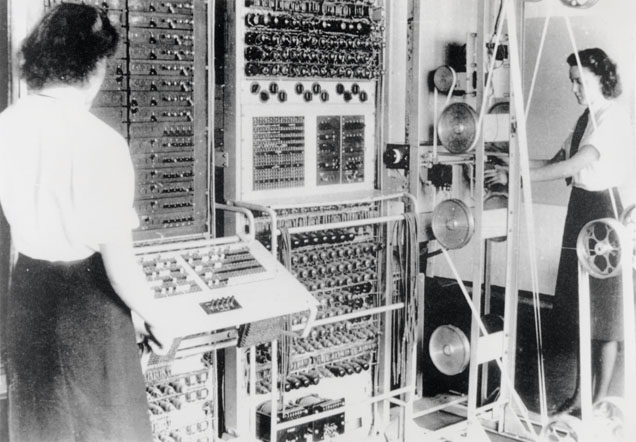
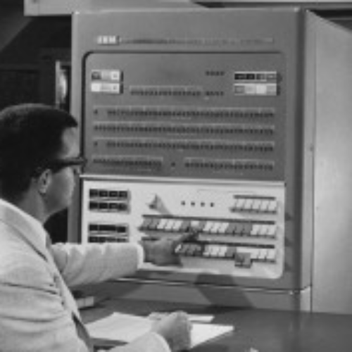
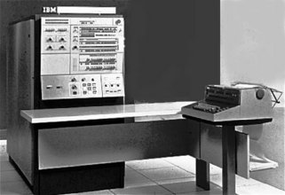
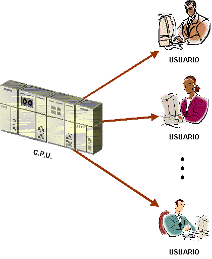
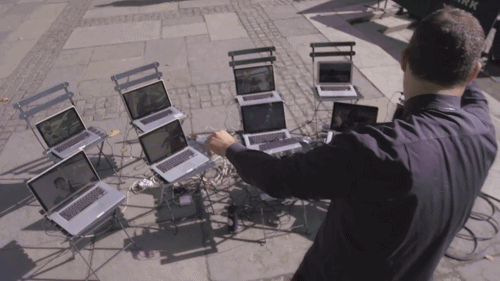
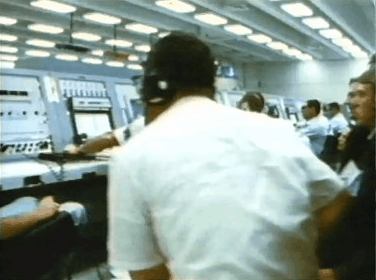

Sistemas Operativos
Linea de Tiempo
Creado por Julian Mahecha

Decada de 1950
Monitor Residente
Su funcionamiento era bastante simple, se limitaba a cargar programas a la memoria, leyéndolos de una cinta o de tarjetas perforadas, y ejecutarlos. El problema era encontrar una forma de optimizar el tiempo entre la retirada de un trabajo y el montaje del siguiente. El primer Sistema Operativo de la historia fue creado en 1956 para un ordenador IBM 704, y básicamente lo único que hacía era comenzar la ejecución de un programa cuando el anterior terminab
Almacenamiento Temporal
Su objetivo era disminuir el tiempo de carga de los programas, haciendo simultánea la carga del programa o la salida de datos con la ejecución de la siguiente tarea. Para ello se utilizaban dos técnicas, el buffering y el spooling.
Decada de 1960
En los años 60 se produjeron cambios notorios en varios campos de la informática, con la aparición del circuito integrado la mayoría orientados a seguir incrementando el potencial de los ordenadores. Para ello se utilizaban técnicas de lo más diversas.
Sistema Operativo Multiprogramación
En un sistema "multiprogramado" la memoria principal alberga a más de un programa de usuario. La CPU ejecuta instrucciones de un programa, cuando el que se encuentra en ejecución realiza una operación de E/S; en lugar de esperar a que termine la operación de E/S, se pasa a ejecutar otro programa. Si éste realiza, a su vez, otra operación de E/S, se mandan las órdenes oportunas al controlador, y pasa a ejecutarse otro. De esta forma es posible, teniendo almacenado un conjunto adecuado de tareas en cada momento, utilizar de manera óptima los recursos disponibles.
Tiempo compartido
En este punto tenemos un sistema que hace buen uso de la electrónica disponible, pero adolece la falta de interactividad; para conseguirla debe convertirse en un sistema multiusuario, en el cual existen varios usuarios con un terminal en línea, utilizando el modo de operación de tiempo compartido. En estos sistemas igual que en la multiprogramación. Pero, a diferencia de ésta, cuando un programa lleva cierto tiempo ejecutándose el sistema operativo lo detiene para que se ejecute otra aplicación.
Tiempo Real
Estos sistemas se usan en entornos donde se deben aceptar y procesar en tiempos muy breves un gran número de sucesos, en su mayoría externos al ordenador. Si el sistema no respeta las restricciones de tiempo en las que las operaciones deben entregar su resultado se dice que ha fallado. El tiempo de respuesta a su vez debe servir para resolver el problema o hecho planteado. El procesamiento de archivos se hace de una forma continua, pues se procesa el archivo antes de que entre el siguiente, sus primeros usos fueron y siguen siendo en telecomunicaciones.
MultiProcesador
Diseño que no se encuentran en ordenadores monoprocesador. Estos problemas derivan del hecho de que dos programas pueden ejecutarse simultáneamente y, potencialmente, pueden interferirse entre sí. Concretamente, en lo que se refiere a las lecturas y escrituras en memoria. Existen dos arquitecturas que resuelven estos problemas:
La arquitectura NUMA, donde cada procesador tiene acceso y control exclusivo a una parte de la memoria. La arquitectura SMP, donde todos los procesadores comparten toda la memoria. Esta última debe lidiar con el problema de la coherencia de caché. Cada microprocesador cuenta con su propia memoria caché local. De manera que cuando un microprocesador escribe en una dirección de memoria, lo hace únicamente sobre su copia local en caché. Si otro microprocesador tiene almacenada la misma dirección de memoria en su caché, resultará que trabaja con una copia obsoleta del dato almacenado.
Para que un multiprocesador opere correctamente necesita un sistema operativo especialmente diseñado para ello. La mayoría de los sistemas operativos actuales poseen esta capacidad.
Decada de 1970
Sistemas Operativos Desarrollados
Además del Atlas Supervisor y el OS/360, los años 1970 marcaron el inicio de UNIX, a mediados de los 60 aparece Multics, sistema operativo multiusuario - multitarea desarrollado por los laboratorios Bell de AT&T y Unix, convirtiéndolo en uno de los pocos SO escritos en un lenguaje de alto nivel. En el campo de la programación lógica se dio a luz la primera implementación de Prolog, y en la revolucionaria orientación a objetos, Smalltalk.
Sistemas Operativos Desarrollados
MULTICS (Multiplexed Information and Computing Service)
BDOS (Basic Disk Operating System): Traductor de las instrucciones en llamadas a la BIOS.
CP/M: (Control Program for Microcomputers) fue un sistema operativo desarrollado por Gary Kildall para el microprocesador Intel 8080 (los Intel 8085 y Zilog Z80 podían ejecutar directamente el código del 8080, aunque lo normal era que se entregara el código recompilado para el microprocesador de la máquina). Se trataba del sistema operativo más popular entre las computadoras personales en los años 70. Aunque fue modificado para ejecutarse en un IBM PC, el hecho que IBM eligiera MS-DOS, al fracasar las negociaciones con Digital Research, hizo que el uso de CP/M disminuyera hasta hacerlo desaparecer. CP/M originalmente significaba Control Program/Monitor. Más tarde fue renombrado a Control Program for Microcomputers. En la época, la barra inclinada (/) tenía el significado de "diseñado para". No obstante, Gary Kildall redefinió el significado del acrónimo poco después. CP/M se convirtió en un estándar de industria para los primeros micro-ordenadores.